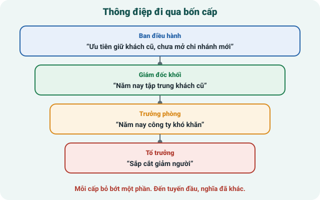

K2 · Trình bày và viết rõ ràng › Bậc 5 Dẫn dắt
Truyền đạt định hướng qua nhiều cấp quản lý
Bài này làm Tờ 4: Bản định hướng và kế hoạch truyền đạt. Mẫu in. Cách kiểm tra hiểu bằng "nhờ nói lại" đã học ở Nói rõ mục tiêu đội (N5).
1. Mục tiêu
- Viết Bản định hướng một trang gồm 5 phần, có nói rõ điều chưa biết.
- Lập kế hoạch truyền đạt theo thứ tự cấp, và kiểm tra thông điệp ở tuyến đầu sau 2 tuần.
2. Khởi động truy xuất
- Bảng chiến lược thành việc có 4 phần nào?
- Ba quyết định có thể ra cho mỗi ưu tiên trong buổi rà soát tháng là gì?
Đáp án
- Ưu tiên; phần của từng khối; chỗ phụ thuộc; tiêu chí.
- Tiếp tục, đổi cách làm, dừng.
Xem lại: Chiến lược thành thực thi.
3. Giải thích
Ở cấp điều hành, ít ai nghe bạn nói trực tiếp. Thông điệp đi qua giám đốc khối, trưởng phòng, tổ trưởng. Mỗi lần chuyển, nó bị rút gọn hoặc đổi nghĩa.

Bản định hướng một trang có 5 phần.
- Vì sao bây giờ: điều gì đã thay đổi.
- Đi đâu: kết quả trong 12–18 tháng tới.
- Không làm gì: điều tổ chức sẽ dừng hoặc chưa làm.
- Thay đổi cho từng nhóm: mỗi nhóm người sẽ thấy gì khác.
- Điều chưa biết: và khi nào sẽ biết.
Phần 5 hay bị bỏ. Nhưng khi lãnh đạo im lặng, người ta tự đoán, thường đoán tệ hơn thực tế. Nói thật điều chưa biết giữ được lòng tin.
Kế hoạch truyền đạt theo thứ tự.
Thứ tự truyền đạt
- Quản lý cấp trung trướcTrước 1–2 ngày. Kèm bản định hướng và câu hỏi thường gặp.
- Toàn tổ chứcLãnh đạo nói trực tiếp, cùng nội dung ở mọi nơi.
- Quản lý nói lại với độiDùng đúng bản một trang, thêm phần riêng của đội.
- Lặp lạiNhắc trong các buổi họp tháng sau.
Quản lý cấp trung phải biết trước nhân viên. Nếu nhân viên hỏi mà quản lý không biết, lòng tin với cả hai cấp đều giảm.
Kiểm tra ở tuyến đầu. Sau 2 tuần, gặp vài người ở cấp thấp nhất. Hỏi: "Năm nay công ty ưu tiên điều gì? Việc của anh chị liên quan thế nào?" So câu trả lời với bản gốc. Chỗ lệch cho biết cấp nào cần nói lại.
4. Ví dụ tại nơi làm việc Việt Nam
Tình huống giả định. Một ngân hàng nhỏ quyết định dừng mở chi nhánh mới trong năm, dồn sức cho ứng dụng di động. Tổng giám đốc, chị Lan, cần nói cho 2.000 nhân viên.
Lần trước, chị chỉ gửi email. Ba tuần sau, ở chi nhánh có tin đồn sắp đóng cửa và cắt người.
Lần này, chị viết Tờ 4. Vì sao bây giờ: khách giao dịch qua ứng dụng tăng nhanh. Đi đâu: 70% giao dịch qua ứng dụng trong 18 tháng. Không làm: chưa mở chi nhánh mới; không đóng chi nhánh hiện có trong năm nay. Thay đổi: giao dịch viên được đào tạo để hướng dẫn khách dùng ứng dụng. Chưa biết: số chi nhánh năm sau, sẽ báo vào tháng 6.
Chị họp giám đốc vùng trước 2 ngày. Sau đó chị nói trực tiếp qua buổi họp trực tuyến toàn ngân hàng.
Hai tuần sau, chị gặp giao dịch viên ở 3 chi nhánh. Hai nơi nói đúng. Một nơi vẫn lo bị cắt người. Chị nhờ giám đốc vùng đó nói lại phần "không đóng chi nhánh".
Vì sao cách này tốt: nói rõ điều không làm và điều chưa biết. Cấp trung biết trước. Kiểm tra thật ở tuyến đầu.
5. Thực hành
Tình huống giả định. Bạn là giám đốc một nhà máy chế biến thủy sản ở Cà Mau. Nhà máy sẽ đưa robot đóng gói vào 2 dây chuyền trong năm sau.
Viết Bản định hướng 5 phần. Ghi thứ tự truyền đạt và 2 câu hỏi để kiểm tra ở tuyến đầu.
Gợi ý 1
Công nhân sẽ lo nhất điều gì? Phần "Thay đổi cho từng nhóm" và "Điều chưa biết" cần trả lời thẳng nỗi lo đó.
Gợi ý 2
Nếu chưa biết chắc về việc làm của công nhân đóng gói, hãy nói rõ là chưa biết và khi nào sẽ biết.
Lời giải mẫu
- Vì sao bây giờ: khách hàng yêu cầu tốc độ đóng gói cao hơn.
- Đi đâu: 2 dây chuyền tự động trước tháng 9 năm sau.
- Không làm: chưa tự động hóa khâu sơ chế.
- Thay đổi: tổ đóng gói học vận hành và kiểm tra robot; tổ bảo trì học bảo dưỡng.
- Chưa biết: số người cần cho mỗi dây chuyền mới. Sẽ báo sau 3 tháng chạy thử.
- Thứ tự: quản đốc và tổ trưởng trước 2 ngày; họp toàn nhà máy theo ca; tổ trưởng nói lại với tổ.
- Hai câu hỏi: "Năm sau nhà máy thay đổi gì?" và "Tổ của anh chị sẽ làm gì khác?"
(Thông tin là giả định.)
6. Tự kiểm tra
Chọn đáp án. Mỗi lựa chọn đều có giải thích.
Câu 1. Ban điều hành chưa quyết có đóng xưởng cũ hay không. Bản định hướng nên viết gì?
-
Chưa đúng. Im lặng khiến người ta tự đoán, thường đoán tệ hơn. Tin đồn lan nhanh hơn thông báo.
-
Đúng. Đúng. Nói thật điều chưa biết, kèm mốc thời gian, giúp giữ lòng tin.
-
Chưa đúng. Hứa điều chưa quyết là rủi ro lớn. Nếu sau đó đổi ý, lòng tin mất hẳn.
Câu 2. Bạn định thông báo cơ cấu mới qua họp toàn công ty sáng mai. Quản lý cấp trung chưa biết gì. Nên làm gì?
-
Chưa đúng. Nhân viên sẽ hỏi quản lý ngay sau họp. Quản lý không trả lời được thì mất uy tín.
-
Đúng. Đúng. Quản lý biết trước thì mới nói lại đúng với đội của họ.
-
Chưa đúng. Mỗi quản lý sẽ nói một kiểu. Thông điệp dễ méo, nhất là khi không có lời của lãnh đạo.
Câu 3. Hai tuần sau thông báo, cách nào kiểm tra tốt nhất xem thông điệp đã đến tuyến đầu đúng chưa?
-
Chưa đúng. Tin qua cấp trung đã được lọc. Họ cũng khó tự thấy chỗ mình nói lệch.
-
Đúng. Đúng. Nghe trực tiếp cho biết thông điệp lệch ở đâu, cấp nào cần nói lại.
-
Chưa đúng. Mở email không có nghĩa là hiểu đúng.
Câu 4. Phần nào của Bản định hướng giúp các khối biết dồn sức vào đâu?
-
Đúng. Đúng. Nói rõ điều dừng hoặc chưa làm giúp các khối không dàn sức cho mọi thứ.
-
Chưa đúng. Phần này giải thích lý do. Nó chưa chỉ ra việc gì nên bớt.
-
Chưa đúng. Phần này giữ lòng tin, nhưng không giúp chọn việc ưu tiên.
7. Phản tư
- Thông điệp quan trọng gần nhất của bạn, tuyến đầu đã hiểu thế nào? Bạn có kiểm tra không?
- Điều chưa biết nào bạn đang ngại nói ra?
8. Áp dụng thật
Trong 7 ngày tới, chọn một thông điệp sắp gửi cho nhiều cấp. Viết Tờ 4. Đặt lịch gặp tuyến đầu sau 2 tuần để kiểm tra.
Mức bằng chứng. Bài dựa trên mô tả năng lực "Communicates with influence" (APS) và "Communicating and Influencing" (UK Success Profiles). Năm phần và thứ tự truyền đạt là cách làm do site đề xuất.
9. Siêu dữ liệu
| skill | K2 · Trình bày và viết rõ ràng |
|---|---|
| level | Bậc 5 · Dẫn dắt |
| group | N6 |
| framework_map | APS Integrated Leadership System: Communicates with influence; UK Civil Service Success Profiles: Communicating and Influencing; WEF: Leadership and social influence; SkillsFuture CCS: Communication; NACE: Communication (chỉ dẫn chiếu) |
| updated | 2026-11-14 |
Hoàn thành bài
Đánh dấu đã học để site gợi ý lịch ôn sau 1, 3 và 7 ngày. Dữ liệu chỉ lưu trên máy của bạn.
Lịch ôn gợi ý: